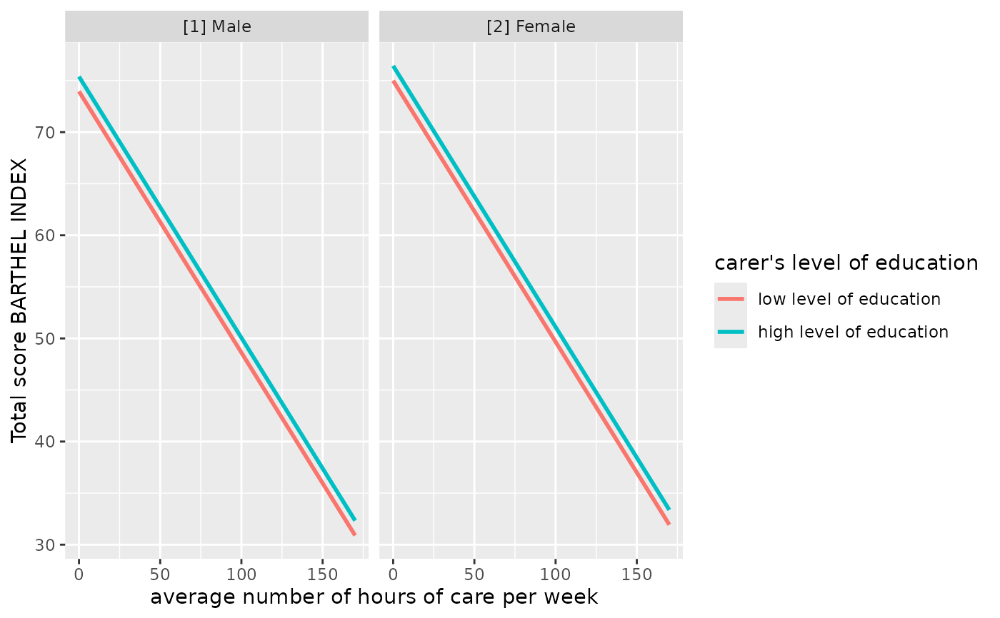

Adjusted predictions and estimated marginal means from regression models
Source:R/predict_response.R
predict_response.RdAfter fitting a model, it is useful generate model-based estimates (expected values, or adjusted predictions) of the response variable for different combinations of predictor values. Such estimates can be used to make inferences about relationships between variables.
The ggeffects package computes marginal means and adjusted predicted
values for the response, at the margin of specific values or levels from
certain model terms. The package is built around three core functions:
predict_response() (understanding results), test_predictions() (importance
of results) and plot() (communicate results).
By default, adjusted predictions or marginal means are returned on the
response scale, which is the easiest and most intuitive scale to interpret
the results. There are other options for specific models as well, e.g. with
zero-inflation component (see documentation of the type-argument). The
result is returned as structured data frame, which is nicely printed by
default. plot() can be used to easily create figures.
The main function to calculate marginal means and adjusted predictions is
predict_response(), which returns adjusted predictions, marginal means
or averaged counterfactual predictions depending on value of the
margin-argument.
In previous versions of ggeffects, the functions ggpredict(), ggemmeans(),
ggeffect() and ggaverage() were used to calculate marginal means and
adjusted predictions. These functions are still available, but predict_response()
as a "wrapper" around these functions is the preferred way to calculate marginal
means and adjusted predictions now.
Usage
predict_response(
model,
terms,
margin = "mean_reference",
ci_level = 0.95,
type = "fixed",
condition = NULL,
interval = "confidence",
back_transform = TRUE,
vcov = NULL,
vcov_args = NULL,
weights = NULL,
bias_correction = FALSE,
verbose = TRUE,
...
)Arguments
- model
A model object.
- terms
Names of those terms from
model, for which predictions should be displayed (so called focal terms). Can be:A character vector, specifying the names of the focal terms. This is the preferred and probably most flexible way to specify focal terms, e.g.
terms = "x [40:60]", to calculate predictions for the values 40 to 60.A list, where each element is a named vector, specifying the focal terms and their values. This is the "classical" R way to specify focal terms, e.g.
list(x = 40:60).A formula, e.g.
terms = ~ x + z, which is internally converted to a character vector. This is probably the least flexible way, as you cannot specify representative values for the focal terms.A data frame representing a "data grid" or "reference grid". Predictions are then made for all combinations of the variables in the data frame.
termsat least requires one variable name. The maximum length is four terms, where the second to fourth term indicate the groups, i.e. predictions of the first term are grouped at meaningful values or levels of the remaining terms (seevalues_at()). It is also possible to define specific values for focal terms, at which adjusted predictions should be calculated (see details below). All remaining covariates that are not specified intermsare "marginalized", see themarginargument in?predict_response. See also argumentconditionto fix non-focal terms to specific values, and argumenttypicalforggpredict()orggemmeans().- margin
Character string, indicating how to marginalize over the non-focal predictors, i.e. those variables that are not specified in
terms. Possible values are"mean_reference","mean_mode","marginalmeans"and"empirical"(or"counterfactual", aka average "counterfactual" predictions). You can set a default-option for themarginargument viaoptions(), e.g.options(ggeffects_margin = "empirical"), so you don't have to specify your preferred marginalization method each time you callpredict_response(). See details in the documentation below.- ci_level
Numeric, the level of the confidence intervals. Use
ci_level = NAif confidence intervals should not be calculated (for instance, due to computation time). Typically, confidence intervals are based on the returned standard errors for the predictions, assuming a t- or normal distribution (based on the model and the available degrees of freedom, i.e. roughly+/- 1.96 * SE). See introduction of this vignette for more details.- type
Character, indicating whether predictions should be conditioned on specific model components or not, or whether population or unit-level predictions are desired. Consequently, most options only apply for survival models, mixed effects models and/or models with zero-inflation (and their Bayesian counter-parts); only exception is
type = "simulate", which is available for some other model classes as well (which respond tosimulate()).Note 1: For
brmsfit-models with zero-inflation component, there is notype = "zero_inflated"nortype = "zi_random"; predicted values for these models always condition on the zero-inflation part of the model. The same is true forMixMod-models from GLMMadaptive with zero-inflation component (see 'Details').Note 2: If
margin = "empirical", or when callingggaverage()respectively, (i.e. counterfactual predictions), thetypeargument is handled differently. It is set to"response"by default, but usually accepts all possible options from thetype-argument of the model's respectivepredict()method. E.g., passing aglmobject would allow the options"response","link", and"terms". For models with zero-inflation component, the below mentioned options"fixed","zero_inflated"and"zi_prob"can also be used and will be "translated" into the correspondingtypeoption of the model's respectivepredict()-method.Note 3: If
margin = "marginalmeans", or when callingggemmeans()respectively,type = "random"andtype = "zi_random"are not available, i.e. no unit-level predictions are possible."fixed"(or"count")Predicted values are conditioned on the fixed effects or conditional model only. For mixed models, predicted values are on the population-level, i.e.
re.form = NAwhen callingpredict(). For models with zero-inflation component, this type would return the predicted mean from the count component (without conditioning on the zero-inflation part)."random"This only applies to mixed models, and
type = "random"does not condition on the zero-inflation component of the model. Use this for unit-level predictions, i.e. predicted values for each level of the random effects groups. Add the name of the related random effect term to theterms-argument (for more details, see this vignette)."zero_inflated"(or"zi")Predicted values are conditioned on the fixed effects and the zero-inflation component, returning the expected value of the response (
mu*(1-p)). For For mixed models with zero-inflation component (e.g. from package glmmTMB), this would return the expected responsemu*(1-p)on the population-level. See 'Details'."zi_random"(or"zero_inflated_random")This only applies to mixed models. Predicted values are conditioned on the fixed effects and the zero-inflation component. Use this for unit-level predictions, i.e. predicted values for each level of the random effects groups. Add the name of the related random effect term to the
terms-argument (for more details, see this vignette)."zi_prob"Returns the predicted zero-inflation probability, i.e. probability of a structural or "true" zero (see this vignette for a short introduction into zero-inflation models).
"simulate"Predicted values and confidence resp. prediction intervals are based on simulations, i.e. calls to
simulate(). This type of prediction takes all model uncertainty into account. Currently supported models are objects of classlm,glm,glmmTMB,wbm,MixModandmerMod. Usensimto set the number of simulated draws (see...for details)."survival"and"cumulative_hazard"Applies only to
coxph-objects from the survial-package and calculates the survival probability or the cumulative hazard of an event.
When
margin = "empirical"(or when callingggaverage()), thetypeargument accepts all values from thetype-argument of the model's respectivepredict()-method.- condition
Named character vector, which indicates covariates that should be held constant at specific values. Unlike
typical, which applies a function to the covariates to determine the value that is used to hold these covariates constant,conditioncan be used to define exact values, for instancecondition = c(covariate1 = 20, covariate2 = 5). See 'Examples'.- interval
Type of interval calculation, can either be
"confidence"(default) or"prediction". May be abbreviated. Unlike confidence intervals, prediction intervals include the residual variance (sigma^2) to account for the uncertainty of predicted values. Note that prediction intervals are not available for all models, but only for models that work withinsight::get_sigma(). For Bayesian models, wheninterval = "confidence", predictions are based on posterior draws of the linear predictorrstantools::posterior_epred(). Ifinterval = "prediction",rstantools::posterior_predict()is called.- back_transform
Logical, if
TRUE(the default), predicted values for log-, log-log, exp, sqrt and similar transformed responses will be back-transformed to original response-scale. Seeinsight::find_transformation()for more details.- vcov
Variance-covariance matrix used to compute uncertainty estimates (e.g., for confidence intervals based on robust standard errors). This argument accepts a covariance matrix, a function which returns a covariance matrix, or a string which identifies the function to be used to compute the covariance matrix.
A covariance matrix
A function which returns a covariance matrix (e.g.,
stats::vcov())A string which indicates the kind of uncertainty estimates to return.
Heteroskedasticity-consistent:
"HC","HC0","HC1","HC2","HC3","HC4","HC4m","HC5". See?sandwich::vcovHCCluster-robust:
"vcovCR","CR0","CR1","CR1p","CR1S","CR2","CR3". See?clubSandwich::vcovCR.Bootstrap:
"BS","xy","fractional","jackknife","residual","wild","mammen","norm","webb". See?sandwich::vcovBSOther
sandwichpackage functions:"HAC","PC","CL", or"PL".
If
NULL, standard errors (and confidence intervals) for predictions are based on the standard errors as returned by thepredict()-function. Note that probably not all model objects that work withpredict_response()are also supported by the sandwich or clubSandwich packages.See details in this vignette.
- vcov_args
List of arguments to be passed to the function identified by the
vcovargument. This function is typically supplied by the sandwich or clubSandwich packages. Please refer to their documentation (e.g.,?sandwich::vcovHAC) to see the list of available arguments. If no estimation type (argumenttype) is given, the default type for"HC"equals the default from the sandwich package; for type"CR"the default is set to"CR3". For other defaults, refer to the documentation in the sandwich or clubSandwich package.- weights
This argument is used in two different ways, depending on the
marginargument.When
margin = "empirical",weightscan either be a character vector, naming the weigthing variable in the data, or a vector of weights (of same length as the number of observations in the data). This variable will be used to weight adjusted predictions.When
margin = "marginalmeans",weightsmust be a character vector and is passed toemmeans::emmeans(), specifying weights to use in averaging non-focal categorical predictors. See https://rvlenth.github.io/emmeans/reference/emmeans.html for details.
- bias_correction
Logical, if
TRUE, adjusts for bias-correction when back-transforming the predicted values (to the response scale) for non-Gaussian mixed models. Back-transforming the the population-level predictions ignores the effect of the variation around the population mean, so the result on the original data scale is biased due to Jensen's inequality. That means, whentype = "fixed"(the default) and population level predictions are returned, it is recommended to setbias_correction = TRUE. To apply bias-correction, a valid value of sigma is required, which is extracted by default usinginsight::get_variance_residual(). Optionally, to provide own estimates of uncertainty, use thesigmaargument. Note thatbias_correctioncurrently only applies to mixed models, where there are additive random components involved and where that bias-adjustment can be appropriate. Ifggemmeans()is called, bias-correction can also be applied to GEE-models.- verbose
Toggle messages or warnings.
- ...
If
marginis set to"mean_reference"or"mean_mode", arguments are passed down toggpredict()(further down topredict()); formargin = "marginalmeans", further arguments passed down toggemmeans()and thereby toemmeans::emmeans(); ifmargin = "empirical", further arguments are passed down tomarginaleffects::avg_predictions(). Iftype = "simulate",...may also be used to set the number of simulation, e.g.nsim = 500. When callingggeffect(), further arguments passed down toeffects::Effect().
Value
A data frame (with ggeffects class attribute) with consistent data columns:
"x": the values of the first term interms, used as x-position in plots."predicted": the predicted values of the response, used as y-position in plots."std.error": the standard error of the predictions. Note that the standard errors are always on the link-scale, and not back-transformed for non-Gaussian models!"conf.low": the lower bound of the confidence interval for the predicted values."conf.high": the upper bound of the confidence interval for the predicted values."group": the grouping level from the second term interms, used as grouping-aesthetics in plots."facet": the grouping level from the third term interms, used to indicate facets in plots.The estimated marginal means (or predicted values) are always on the response scale!
For proportional odds logistic regression (see
?MASS::polr) resp. cumulative link models (e.g., see?ordinal::clm), an additional column"response.level"is returned, which indicates the grouping of predictions based on the level of the model's response.Note that for convenience reasons, the columns for the intervals are always named
"conf.low"and"conf.high", even though for Bayesian models credible or highest posterior density intervals are returned.There is an
as.data.frame()method for objects of classggeffects, which has anterms_to_colnamesargument, to use the term names as column names instead of the standardized names"x"etc.
Note
Printing Results
The print() method gives a clean output (especially for predictions by
groups), and indicates at which values covariates were held constant.
Furthermore, the print() method has several arguments to customize the
output. See this vignette
for details.
Limitations
The support for some models, for example from package MCMCglmm, is not fully tested and may fail for certain models. If you encounter any errors, please file an issue at Github.
Supported Models
A list of supported models can be found at the package website.
Support for models varies by marginalization method (the margin argument),
i.e. although predict_response() supports most models, some models are only
supported exclusively by one of the four downstream functions (ggpredict(),
ggemmeans(), ggeffect() or ggaverage()). This means that not all models
work for every margin option of predict_response().
Holding covariates at constant values, or how to marginalize over the non-focal predictors
predict_response() is a wrapper around ggpredict(), ggemmeans() and
ggaverage(). Depending on the value of the margin argument,
predict_response() calls one of those functions. The margin argument
indicates how to marginalize over the non-focal predictors, i.e. those
variables that are not specified in terms. Possible values are:
"mean_reference"and"mean_mode": For"mean_reference", non-focal predictors are set to their mean (numeric variables), reference level (factors), or "most common" value (mode) in case of character vectors. For"mean_mode", non-focal predictors are set to their mean (numeric variables) or mode (factors, or "most common" value in case of character vectors).These predictons represent a rather "theoretical" view on your data, which does not necessarily exactly reflect the characteristics of your sample. It helps answer the question, "What is the predicted (or: expected) value of the response at meaningful values or levels of my focal terms for a 'typical' observation in my data?", where 'typical' refers to certain characteristics of the remaining predictors.
"marginalmeans": non-focal predictors are set to their mean (numeric variables) or averaged over the levels or "values" for factors and character vectors. Averaging over the factor levels of non-focal terms computes a kind of "weighted average" for the values at which these terms are hold constant. Thus, non-focal categorical terms are conditioned on "weighted averages" of their levels. There are different weighting options that can be altered using theweightsargument.These predictions come closer to the sample, because all possible values and levels of the non-focal predictors are taken into account. It would answer the question, "What is the predicted (or: expected) value of the response at meaningful values or levels of my focal terms for an 'average' observation in my data?". It refers to randomly picking a subject of your sample and the result you get on average.
"empirical"(or"counterfactual"): non-focal predictors are averaged over the observations in the sample. The response is predicted for each subject in the data and predicted values are then averaged across all subjects, aggregated/grouped by the focal terms. In particular, averaging is applied to counterfactual predictions (Dickerman and Hernan 2020). There is a more detailed description in this vignette.Counterfactual predictions are useful, insofar as the results can also be transferred to other contexts. It answers the question, "What is the predicted (or: expected) value of the response at meaningful values or levels of my focal terms for the 'average' observation in the population?". It does not only refer to the actual data in your sample, but also "what would be if" we had more data, or if we had data from a different population. This is where "counterfactual" refers to.
You can set a default-option for the margin argument via options(), e.g.
options(ggeffects_margin = "empirical"), so you don't have to specify your
"default" marginalization method each time you call predict_response().
Use options(ggeffects_margin = NULL) to remove that setting.
The condition argument can be used to fix non-focal terms to specific
values.
Marginal Means and Adjusted Predictions at Specific Values
Meaningful values of focal terms can be specified via the terms argument.
Specifying meaningful or representative values as string pattern is the
preferred way in the ggeffects package. However, it is also possible to
use a list() for the focal terms if prefer the "classical" R way. terms
can also be a data (or reference) grid provided as data frame. All options
are described in this vignette.
Indicating levels in square brackets allows for selecting only certain
groups or values resp. value ranges. The term name and the start of the
levels in brackets must be separated by a whitespace character, e.g.
terms = c("age", "education [1,3]"). Numeric ranges, separated with colon,
are also allowed: terms = c("education", "age [30:60]"). The stepsize for
ranges can be adjusted using by, e.g. terms = "age [30:60 by=5]".
The terms argument also supports the same shortcuts as the values argument
in values_at(). So terms = "age [meansd]" would return predictions for
the values one standard deviation below the mean age, the mean age and one SD
above the mean age. terms = "age [quart2]" would calculate predictions at
the value of the lower, median and upper quartile of age.
Furthermore, it is possible to specify a function name. Values for predictions
will then be transformed, e.g. terms = "income [exp]". This is useful when
model predictors were transformed for fitting the model and should be
back-transformed to the original scale for predictions. It is also possible
to define own functions (see
this vignette).
Instead of a function, it is also possible to define the name of a variable
with specific values, e.g. to define a vector v = c(1000, 2000, 3000) and
then use terms = "income [v]".
You can take a random sample of any size with sample=n, e.g
terms = "income [sample=8]", which will sample eight values from
all possible values of the variable income. This option is especially
useful for plotting predictions at certain levels of random effects
group levels, where the group factor has too many levels to be completely
plotted. For more details, see
this vignette.
Finally, numeric vectors for which no specific values are given, a "pretty range"
is calculated (see pretty_range()), to avoid memory allocation problems
for vectors with many unique values. If a numeric vector is specified as
second or third term (i.e. if this focal term is used for "stratification"),
representative values (see values_at()) are chosen (unless other values
are specified), which are typically the mean value, as well as one standard
deviation below and above the mean. If all values for a numeric vector should
be used to compute predictions, you may use e.g. terms = "age [all]". See
also package vignettes.
To create a pretty range that should be smaller or larger than the default
range (i.e. if no specific values would be given), use the n tag, e.g.
terms="age [n=5]" or terms="age [n=12]". Larger values for n return a
larger range of predicted values.
Bayesian Regression Models
predict_response() also works with Stan-models from the rstanarm or
brms-packages. The predicted values are the median value of all drawn
posterior samples. Standard errors are the median absolute deviation of the
posterior samples. The confidence intervals for Stan-models are Bayesian
predictive intervals. By default, the predictions are based on
rstantools::posterior_epred() and hence have the limitations that the
uncertainty of the error term (residual variance) is not taken into account.
The recommendation is to use the posterior predictive distribution
(rstantools::posterior_predict()), i.e. setting interval = "prediction".
Mixed (multilevel) Models
For mixed models, following options are possible:
Predictions can be made on the population-level (
type = "fixed", the default) or for each level of the grouping variable (unit-level). If unit-level predictions are requested, you need to settype = "random"`` and specify the grouping variable(s) in theterms` argument.Population-level predictions can be either conditional (predictions for a "typical" group) or marginal (average predictions across all groups). The default in
predict_response()calculated conditional predictions. Setmargin = "empirical"for marginal predictions.Prediction intervals, i.e. when
interval = "predictions"also account for the uncertainty in the random effects.
See more details in this vignette.
Zero-Inflated and Zero-Inflated Mixed Models with brms
Models of class brmsfit always condition on the zero-inflation component,
if the model has such a component. Hence, there is no type = "zero_inflated"
nor type = "zi_random" for brmsfit-models, because predictions are based
on draws of the posterior distribution, which already account for the
zero-inflation part of the model.
Zero-Inflated and Zero-Inflated Mixed Models with glmmTMB
If model is of class glmmTMB, hurdle, zeroinfl or zerotrunc, and
margin is not set to "empirical, simulations from a multivariate
normal distribution (see ?MASS::mvrnorm) are drawn to calculate mu*(1-p).
Confidence intervals are then based on quantiles of these results.
For type = "zi_random", prediction intervals also take the uncertainty in
the random-effect paramters into account (see also Brooks et al. 2017,
pp.391-392 for details).
An alternative for models fitted with glmmTMB that take all model
uncertainties into account are simulations based on simulate(), which
is used when type = "simulate" (see Brooks et al. 2017, pp.392-393 for
details).
Finally, if margin = "empirical", the returned predictions are already
conditioned on the zero-inflation part (and possible random effects) of the
model, thus these are most comparable to the type = "simulate" option. In
other words, if all model components should be taken into account for
predictions, you should consider using margin = "empirical".
MixMod-models from GLMMadaptive
Predicted values for the fixed effects component (type = "fixed" or
type = "zero_inflated") are based on predict(..., type = "mean_subject"),
while predicted values for random effects components (type = "random" or
type = "zi_random") are calculated with predict(..., type = "subject_specific")
(see ?GLMMadaptive::predict.MixMod for details). The latter option
requires the response variable to be defined in the newdata-argument
of predict(), which will be set to its typical value (see
values_at()).
Multinomial Models
polr, clm models, or more generally speaking, models with ordinal or
multinominal outcomes, have an additional column response.level, which
indicates with which level of the response variable the predicted values are
associated.
Averaged model predictions (package MuMIn)
For averaged model predictions, i.e. when the input model is an object of
class "averaging" (MuMIn::model.avg()), predictions are made with the
full averaged coefficients.
References
Brooks ME, Kristensen K, Benthem KJ van, Magnusson A, Berg CW, Nielsen A, et al. glmmTMB Balances Speed and Flexibility Among Packages for Zero-inflated Generalized Linear Mixed Modeling. The R Journal. 2017;9: 378-400.
Johnson PC. 2014. Extension of Nakagawa & Schielzeth's R2GLMM to random slopes models. Methods Ecol Evol, 5: 944-946.
Dickerman BA, Hernan, MA. Counterfactual prediction is not only for causal inference. Eur J Epidemiol 35, 615–617 (2020).
Examples
library(sjlabelled)
data(efc)
fit <- lm(barthtot ~ c12hour + neg_c_7 + c161sex + c172code, data = efc)
predict_response(fit, terms = "c12hour")
#> # Predicted values of Total score BARTHEL INDEX
#>
#> c12hour | Predicted | 95% CI
#> ----------------------------------
#> 0 | 75.44 | 73.25, 77.63
#> 20 | 70.38 | 68.56, 72.19
#> 45 | 64.05 | 62.39, 65.70
#> 65 | 58.98 | 57.15, 60.80
#> 85 | 53.91 | 51.71, 56.12
#> 105 | 48.85 | 46.14, 51.55
#> 125 | 43.78 | 40.51, 47.05
#> 170 | 32.38 | 27.73, 37.04
#>
#> Adjusted for:
#> * neg_c_7 = 11.84
#> * c161sex = 1.76
#> * c172code = 1.97
#>
#> Not all rows are shown in the output. Use `print(..., n = Inf)` to show
#> all rows.
predict_response(fit, terms = c("c12hour", "c172code"))
#> # Predicted values of Total score BARTHEL INDEX
#>
#> c172code: low level of education
#>
#> c12hour | Predicted | 95% CI
#> ----------------------------------
#> 0 | 74.75 | 71.26, 78.23
#> 30 | 67.15 | 64.03, 70.26
#> 55 | 60.81 | 57.77, 63.86
#> 85 | 53.22 | 49.95, 56.48
#> 115 | 45.62 | 41.86, 49.37
#> 170 | 31.69 | 26.59, 36.78
#>
#> c172code: intermediate level of education
#>
#> c12hour | Predicted | 95% CI
#> ----------------------------------
#> 0 | 75.46 | 73.28, 77.65
#> 30 | 67.87 | 66.16, 69.57
#> 55 | 61.53 | 59.82, 63.25
#> 85 | 53.93 | 51.72, 56.14
#> 115 | 46.34 | 43.35, 49.32
#> 170 | 32.40 | 27.74, 37.07
#>
#> c172code: high level of education
#>
#> c12hour | Predicted | 95% CI
#> ----------------------------------
#> 0 | 76.18 | 72.81, 79.55
#> 30 | 68.58 | 65.41, 71.76
#> 55 | 62.25 | 59.00, 65.50
#> 85 | 54.65 | 51.03, 58.27
#> 115 | 47.05 | 42.85, 51.26
#> 170 | 33.12 | 27.50, 38.74
#>
#> Adjusted for:
#> * neg_c_7 = 11.84
#> * c161sex = 1.76
#>
#> Not all rows are shown in the output. Use `print(..., n = Inf)` to show
#> all rows.
# more compact table layout for printing
out <- predict_response(fit, terms = c("c12hour", "c172code", "c161sex"))
print(out, collapse_table = TRUE)
#> # Predicted values of Total score BARTHEL INDEX
#>
#> c12hour | c172code | c161sex | Predicted | 95% CI
#> ---------------------------------------------------------------------------------
#> 0 | low level of education | [1] Male | 73.95 | 69.35, 78.56
#> 45 | | | 62.56 | 58.22, 66.89
#> 85 | | | 52.42 | 47.89, 56.96
#> 170 | | | 30.89 | 24.84, 36.95
#> 0 | | [2] Female | 75.00 | 71.40, 78.59
#> 45 | | | 63.60 | 60.45, 66.74
#> 85 | | | 53.46 | 50.12, 56.80
#> 170 | | | 31.93 | 26.82, 37.05
#> 0 | intermediate level of education | [1] Male | 74.67 | 71.05, 78.29
#> 45 | | | 63.27 | 59.88, 66.67
#> 85 | | | 53.14 | 49.39, 56.89
#> 170 | | | 31.61 | 25.97, 37.25
#> 0 | | [2] Female | 75.71 | 73.31, 78.12
#> 45 | | | 64.32 | 62.41, 66.22
#> 85 | | | 54.18 | 51.81, 56.56
#> 170 | | | 32.65 | 27.94, 37.37
#> 0 | high level of education | [1] Male | 75.39 | 71.03, 79.75
#> 45 | | | 63.99 | 59.72, 68.26
#> 85 | | | 53.86 | 49.22, 58.50
#> 170 | | | 32.33 | 25.94, 38.72
#> 0 | | [2] Female | 76.43 | 72.88, 79.98
#> 45 | | | 65.03 | 61.67, 68.39
#> 85 | | | 54.90 | 51.15, 58.65
#> 170 | | | 33.37 | 27.69, 39.05
#>
#> Adjusted for:
#> * neg_c_7 = 11.84
#>
#> Not all rows are shown in the output. Use `print(..., n = Inf)` to show
#> all rows.
# specified as formula
predict_response(fit, terms = ~ c12hour + c172code + c161sex)
#> # Predicted values of Total score BARTHEL INDEX
#>
#> c172code: low level of education
#> c161sex: [1] Male
#>
#> c12hour | Predicted | 95% CI
#> ----------------------------------
#> 0 | 73.95 | 69.35, 78.56
#> 45 | 62.56 | 58.22, 66.89
#> 85 | 52.42 | 47.89, 56.96
#> 170 | 30.89 | 24.84, 36.95
#>
#> c172code: low level of education
#> c161sex: [2] Female
#>
#> c12hour | Predicted | 95% CI
#> ----------------------------------
#> 0 | 75.00 | 71.40, 78.59
#> 45 | 63.60 | 60.45, 66.74
#> 85 | 53.46 | 50.12, 56.80
#> 170 | 31.93 | 26.82, 37.05
#>
#> c172code: intermediate level of education
#> c161sex: [1] Male
#>
#> c12hour | Predicted | 95% CI
#> ----------------------------------
#> 0 | 74.67 | 71.05, 78.29
#> 45 | 63.27 | 59.88, 66.67
#> 85 | 53.14 | 49.39, 56.89
#> 170 | 31.61 | 25.97, 37.25
#>
#> c172code: intermediate level of education
#> c161sex: [2] Female
#>
#> c12hour | Predicted | 95% CI
#> ----------------------------------
#> 0 | 75.71 | 73.31, 78.12
#> 45 | 64.32 | 62.41, 66.22
#> 85 | 54.18 | 51.81, 56.56
#> 170 | 32.65 | 27.94, 37.37
#>
#> c172code: high level of education
#> c161sex: [1] Male
#>
#> c12hour | Predicted | 95% CI
#> ----------------------------------
#> 0 | 75.39 | 71.03, 79.75
#> 45 | 63.99 | 59.72, 68.26
#> 85 | 53.86 | 49.22, 58.50
#> 170 | 32.33 | 25.94, 38.72
#>
#> c172code: high level of education
#> c161sex: [2] Female
#>
#> c12hour | Predicted | 95% CI
#> ----------------------------------
#> 0 | 76.43 | 72.88, 79.98
#> 45 | 65.03 | 61.67, 68.39
#> 85 | 54.90 | 51.15, 58.65
#> 170 | 33.37 | 27.69, 39.05
#>
#> Adjusted for:
#> * neg_c_7 = 11.84
#>
#> Not all rows are shown in the output. Use `print(..., n = Inf)` to show
#> all rows.
# only range of 40 to 60 for variable 'c12hour'
predict_response(fit, terms = "c12hour [40:60]")
#> # Predicted values of Total score BARTHEL INDEX
#>
#> c12hour | Predicted | 95% CI
#> ----------------------------------
#> 40 | 65.31 | 63.66, 66.96
#> 43 | 64.55 | 62.90, 66.20
#> 45 | 64.05 | 62.39, 65.70
#> 47 | 63.54 | 61.88, 65.20
#> 50 | 62.78 | 61.11, 64.45
#> 53 | 62.02 | 60.33, 63.71
#> 55 | 61.51 | 59.80, 63.22
#> 60 | 60.25 | 58.49, 62.01
#>
#> Adjusted for:
#> * neg_c_7 = 11.84
#> * c161sex = 1.76
#> * c172code = 1.97
#>
#> Not all rows are shown in the output. Use `print(..., n = Inf)` to show
#> all rows.
# terms as named list
predict_response(fit, terms = list(c12hour = 40:60))
#> # Predicted values of Total score BARTHEL INDEX
#>
#> c12hour | Predicted | 95% CI
#> ----------------------------------
#> 40 | 65.31 | 63.66, 66.96
#> 43 | 64.55 | 62.90, 66.20
#> 45 | 64.05 | 62.39, 65.70
#> 47 | 63.54 | 61.88, 65.20
#> 50 | 62.78 | 61.11, 64.45
#> 53 | 62.02 | 60.33, 63.71
#> 55 | 61.51 | 59.80, 63.22
#> 60 | 60.25 | 58.49, 62.01
#>
#> Adjusted for:
#> * neg_c_7 = 11.84
#> * c161sex = 1.76
#> * c172code = 1.97
#>
#> Not all rows are shown in the output. Use `print(..., n = Inf)` to show
#> all rows.
# covariate "neg_c_7" is held constant at a value of 11.84 (its mean value).
# To use a different value, use "condition"
predict_response(fit, terms = "c12hour [40:60]", condition = c(neg_c_7 = 20))
#> # Predicted values of Total score BARTHEL INDEX
#>
#> c12hour | Predicted | 95% CI
#> ----------------------------------
#> 40 | 46.56 | 42.58, 50.55
#> 43 | 45.80 | 41.84, 49.76
#> 45 | 45.30 | 41.35, 49.24
#> 47 | 44.79 | 40.86, 48.72
#> 50 | 44.03 | 40.11, 47.94
#> 53 | 43.27 | 39.37, 47.17
#> 55 | 42.76 | 38.87, 46.65
#> 60 | 41.50 | 37.62, 45.37
#>
#> Adjusted for:
#> * c161sex = 1.76
#> * c172code = 1.97
#>
#> Not all rows are shown in the output. Use `print(..., n = Inf)` to show
#> all rows.
# to plot ggeffects-objects, you can use the 'plot()'-function.
# the following examples show how to build your ggplot by hand.
# \donttest{
# plot predicted values, remaining covariates held constant
library(ggplot2)
mydf <- predict_response(fit, terms = "c12hour")
ggplot(mydf, aes(x, predicted)) +
geom_line() +
geom_ribbon(aes(ymin = conf.low, ymax = conf.high), alpha = 0.1)
# three variables, so we can use facets and groups
mydf <- predict_response(fit, terms = c("c12hour", "c161sex", "c172code"))
ggplot(mydf, aes(x = x, y = predicted, colour = group)) +
stat_smooth(method = "lm", se = FALSE) +
facet_wrap(~facet, ncol = 2)
#> `geom_smooth()` using formula = 'y ~ x'
# select specific levels for grouping terms
mydf <- predict_response(fit, terms = c("c12hour", "c172code [1,3]", "c161sex"))
ggplot(mydf, aes(x = x, y = predicted, colour = group)) +
stat_smooth(method = "lm", se = FALSE) +
facet_wrap(~facet) +
labs(
y = get_y_title(mydf),
x = get_x_title(mydf),
colour = get_legend_title(mydf)
)
#> `geom_smooth()` using formula = 'y ~ x'

# level indication also works for factors with non-numeric levels
# and in combination with numeric levels for other variables
data(efc)
efc$c172code <- sjlabelled::as_label(efc$c172code)
fit <- lm(barthtot ~ c12hour + neg_c_7 + c161sex + c172code, data = efc)
predict_response(fit, terms = c(
"c12hour",
"c172code [low level of education, high level of education]",
"c161sex [1]"
))
#> # Predicted values of Total score BARTHEL INDEX
#>
#> c172code: low level of education
#>
#> c12hour | Predicted | 95% CI
#> ----------------------------------
#> 0 | 72.81 | 67.90, 77.72
#> 30 | 65.22 | 60.53, 69.90
#> 55 | 58.89 | 54.22, 63.55
#> 85 | 51.29 | 46.45, 56.13
#> 115 | 43.69 | 38.48, 48.90
#> 170 | 29.76 | 23.48, 36.05
#>
#> c172code: high level of education
#>
#> c12hour | Predicted | 95% CI
#> ----------------------------------
#> 0 | 74.03 | 69.23, 78.83
#> 30 | 66.43 | 61.74, 71.13
#> 55 | 60.10 | 55.33, 64.88
#> 85 | 52.51 | 47.45, 57.56
#> 115 | 44.91 | 39.39, 50.43
#> 170 | 30.98 | 24.28, 37.68
#>
#> Adjusted for:
#> * neg_c_7 = 11.84
#>
#> Not all rows are shown in the output. Use `print(..., n = Inf)` to show
#> all rows.
# when "terms" is a named list
predict_response(fit, terms = list(
c12hour = seq(0, 170, 30),
c172code = c("low level of education", "high level of education"),
c161sex = 1
))
#> # Predicted values of Total score BARTHEL INDEX
#>
#> c172code: low level of education
#>
#> c12hour | Predicted | 95% CI
#> ----------------------------------
#> 0 | 72.81 | 67.90, 77.72
#> 30 | 65.22 | 60.53, 69.90
#> 60 | 57.62 | 52.94, 62.29
#> 90 | 50.02 | 45.14, 54.91
#> 120 | 42.43 | 37.14, 47.72
#> 150 | 34.83 | 28.98, 40.67
#>
#> c172code: high level of education
#>
#> c12hour | Predicted | 95% CI
#> ----------------------------------
#> 0 | 74.03 | 69.23, 78.83
#> 30 | 66.43 | 61.74, 71.13
#> 60 | 58.84 | 54.03, 63.64
#> 90 | 51.24 | 46.11, 56.36
#> 120 | 43.64 | 38.03, 49.26
#> 150 | 36.05 | 29.82, 42.28
#>
#> Adjusted for:
#> * neg_c_7 = 11.84
# use categorical value on x-axis, use axis-labels, add error bars
dat <- predict_response(fit, terms = c("c172code", "c161sex"))
ggplot(dat, aes(x, predicted, colour = group)) +
geom_point(position = position_dodge(0.1)) +
geom_errorbar(
aes(ymin = conf.low, ymax = conf.high),
position = position_dodge(0.1)
) +
scale_x_discrete(breaks = 1:3, labels = get_x_labels(dat))
# 3-way-interaction with 2 continuous variables
data(efc)
# make categorical
efc$c161sex <- as_factor(efc$c161sex)
fit <- lm(neg_c_7 ~ c12hour * barthtot * c161sex, data = efc)
# select only levels 30, 50 and 70 from continuous variable Barthel-Index
dat <- predict_response(fit, terms = c("c12hour", "barthtot [30,50,70]", "c161sex"))
ggplot(dat, aes(x = x, y = predicted, colour = group)) +
stat_smooth(method = "lm", se = FALSE, fullrange = TRUE) +
facet_wrap(~facet) +
labs(
colour = get_legend_title(dat),
x = get_x_title(dat),
y = get_y_title(dat),
title = get_title(dat)
)
#> `geom_smooth()` using formula = 'y ~ x'
# or with ggeffects' plot-method
plot(dat, show_ci = FALSE)

# }
# predictions for polynomial terms
data(efc)
fit <- glm(
tot_sc_e ~ c12hour + e42dep + e17age + I(e17age^2) + I(e17age^3),
data = efc,
family = poisson()
)
predict_response(fit, terms = "e17age")
#> # Predicted counts of Services for elderly
#>
#> e17age | Predicted | 95% CI
#> -------------------------------
#> 65 | 1.25 | 1.00, 1.55
#> 69 | 0.97 | 0.87, 1.09
#> 74 | 0.90 | 0.80, 1.01
#> 78 | 0.94 | 0.85, 1.04
#> 82 | 1.01 | 0.92, 1.11
#> 87 | 1.06 | 0.94, 1.18
#> 91 | 0.97 | 0.84, 1.12
#> 103 | 0.22 | 0.07, 0.72
#>
#> Adjusted for:
#> * c12hour = 42.29
#> * e42dep = 2.94
#>
#> Not all rows are shown in the output. Use `print(..., n = Inf)` to show
#> all rows.